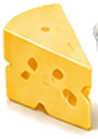
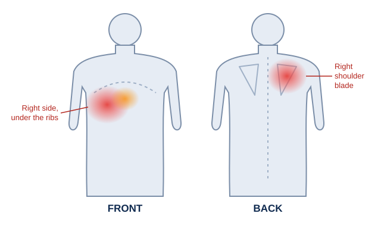
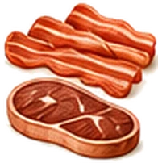

Inflamed or Infected Gallbladder: Signs of Cholecystitis and When to Get Help
Most gallbladder attacks ease within a few hours. When the pain doesn't go away, the gallbladder may have become inflamed or infected. This is called acute cholecystitis, and it's the time to stop waiting it out and get medical help.
When to get help straight away
Get urgent advice from your GP or NHS 111 if tummy pain lasts longer than 30 minutes. Call 999 or go to A&E if you have:
- sudden, severe tummy pain
- pain spreading to your back, with vomiting
- a very high temperature, or you feel hot, cold or shivery
- yellow skin or yellowing in the whites of your eyes
Don't drive yourself. No food or drink on this site replaces medical care.
Signs of an inflamed gallbladder
- Sudden, sharp pain in the upper right of your tummy, often spreading towards your right shoulder
- Pain that doesn't go away within a few hours, unlike a normal attack
- Tenderness: the area under your right ribs hurts to touch
- Pain that's worse when you breathe in deeply
- A high temperature, or feeling hot and shivery
- Feeling sick, being sick, sweating or losing your appetite
- Yellowing of the skin or the whites of the eyes, in some people
Normal attack or inflamed gallbladder?
| Typical gallbladder attack | Inflamed gallbladder (cholecystitis) | |
|---|---|---|
| How long | 30 minutes to a few hours, then eases | Keeps going for many hours or days |
| Temperature | Usually normal | Often a fever or shivering |
| Tenderness | Sore, but eases after | Very tender to touch, worse on breathing in |
| What to do | Urgent GP or NHS 111 if it lasts over 30 minutes | Get medical help the same day; 999 if severe |
What causes it
In about 95% of cases, a gallstone or thick, gritty bile (called sludge) blocks the narrow tube leading out of the gallbladder. Bile builds up inside, pressure rises, and the gallbladder becomes swollen and inflamed. Sometimes bacteria get in and it becomes infected too.
Much less often, the gallbladder becomes inflamed without any stones. This mostly happens in people who are already very unwell, for example after major surgery, serious injury or a severe infection.
How it's treated
Acute cholecystitis usually means a stay in hospital. Treatment normally includes:
- Resting the gut: not eating or drinking for a while, with fluids through a drip
- Pain relief
- Antibiotics if there's an infection, sometimes for up to a week
- Surgery to remove the gallbladder, usually by keyhole surgery. It's often done within a week of diagnosis if you're well enough, to stop it happening again.
If surgery isn't safe for you, doctors may drain the gallbladder with a thin tube instead.
Why you shouldn't wait it out
Without treatment, an inflamed gallbladder can lead to serious problems, such as part of the gallbladder dying (gangrene) or the gallbladder tearing, which spreads infection through the tummy. These need emergency surgery. Getting help early makes them far less likely.
Life after an inflamed gallbladder
Once you're home, and especially while you're waiting for surgery, food matters. NHS advice for people waiting for gallbladder surgery is a low-fat diet and avoiding the foods that trigger your symptoms. Small, regular meals built around vegetables, fruit, wholegrains and lean protein are the safest pattern. And there's one food that catches out more people than almost any other.
Questions people ask
What are the signs of an inflamed gallbladder?
A sudden, sharp pain in the upper right of your tummy that spreads towards your right shoulder, doesn't go away within a few hours, and is worse when you breathe in deeply. The area is usually very tender. You may also have a high temperature, feel sick or be sick, sweat or lose your appetite.
How is an inflamed gallbladder different from a gallbladder attack?
A normal attack eases within a few hours. With an inflamed gallbladder (cholecystitis), the pain carries on, the area is tender to touch, and there's often a fever. It needs medical treatment.
Can an inflamed gallbladder heal on its own?
You shouldn't wait to find out. Acute cholecystitis usually needs hospital treatment, and without it there's a risk of serious complications such as the gallbladder tearing or the infection spreading.
How is an infected gallbladder treated?
Usually in hospital, with fluids through a drip, pain relief and antibiotics if there's an infection. Removing the gallbladder with keyhole surgery is often recommended, sometimes within a week of diagnosis.
What causes an inflamed gallbladder?
About 95% of cases are caused by a gallstone or thick bile (sludge) blocking the gallbladder's exit. Bile builds up, the gallbladder swells and becomes inflamed, and sometimes it becomes infected.
What should I eat while waiting for gallbladder surgery?
NHS advice for people waiting for surgery is a low-fat diet and avoiding foods that trigger your symptoms. Small, regular meals built around vegetables, fruit, wholegrains and lean protein suit most people.

Full-fat cheese
Cheddar, brie, stilton and halloumi are around a third fat. A cheese sandwich, cheesy pasta or a cheese board can deliver more fat in one sitting than the rest of your day put together. Swap to cottage cheese or quark most of the time, and when you do have hard cheese, keep it to a matchbox-sized portion of something strong.
That's just one food. Your fridge guide sorts more than 50 everyday foods into what to choose, what to limit and what to eat on a bad day, so you never have to guess at a meal again.
Keep reading

Gallbladder painWhere it hurts, what triggers it and when to get help.Gallbladder symptoms10 signs of a gallbladder problem.Where is the pain felt?Front, back, shoulder and left side explained.
Foods to avoid with gallstonesThe complete list of common triggers, with easy swaps.